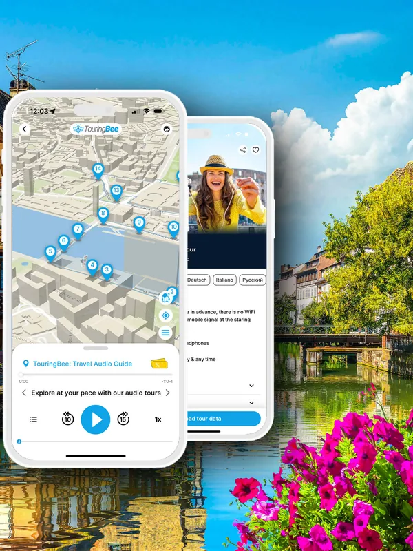
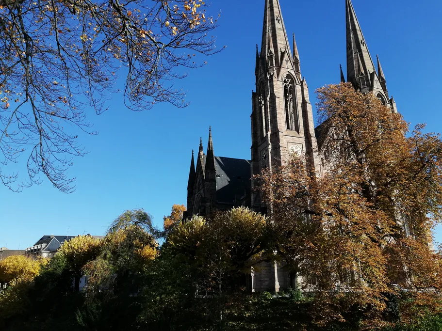
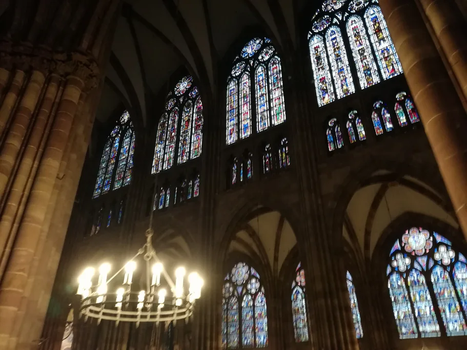

Dopiero planujecie podróż? Zacznijcie od naszego pełnego przewodnika po Strasburgu, a potem wróćcie tutaj, żeby lepiej poznać katedrę.
Katedrę łatwo „zobaczyć” w dwadzieścia minut: fasada, nawa, zegar — i ruszyć dalej. Szkoda, bo niemal wszystko nabiera tu sensu, gdy ktoś pokaże, na co patrzeć: fasada, która nie jest jedną ścianą, lecz dwiema, portal, który w maju 2026 roku odzyskał zaginionego anioła, i witraże starsze niż otaczające je mury.
Zacznijmy od samej budowli: fasady, wnętrza, najlepszej pory na wizytę i kosztów. Jeśli chcecie zrozumieć mechanizm, figury i pokaz o 12:30, wszystko wyjaśnia nasz przewodnik po zegarze astronomicznym. A jeśli chcecie rozumieć to, co widzicie, a nie tylko patrzeć, przygotowaliśmy audioprzewodnik TouringBee po Strasburgu, od 9,99 €.
Nawa ma przerwę w porze obiadowej, więc spontaniczne wejście „po drodze” w środku dnia nie zawsze się udaje. Nocując na Grande Île, macie do katedry pięć minut i łatwo dopasujecie się do godzin otwarcia.

Audioprzewodnik po Strasburgu na własną rękę Dostęp od razu
Najważniejsze informacje
Nawa
| Kiedy | Godziny |
|---|---|
| Pon.–sob. | 8:30–11:15, 12:45–17:45 |
| Niedziele i święta kościelne | 14:00–17:15 |
| W czasie jarmarku bożonarodzeniowego, pon.–sob. | 8:30–17:45 bez przerwy |
Katedra może być zamknięta podczas nabożeństw, przy wejściu jest kontrola bezpieczeństwa. W czasie jarmarku bożonarodzeniowego wchodzi się przez portal południowy, od strony placu du Château.
Taras widokowy
| Sezon | Godziny |
|---|---|
| 1 kwietnia–30 września | 9:30–13:00, 13:30–20:00 |
| 1 października–31 marca | 10:00–13:00, 13:30–18:00 |
Ostatnie wejście 45 minut przed zamknięciem. Zamknięty 1 stycznia, 1 maja i 25 grudnia.
Ile to kosztuje
- Nawa — bezpłatnie
- Zegar astronomiczny — 4 €, pokaz o 12:30. W czasie jarmarku bożonarodzeniowego pokazu nie ma
- Taras widokowy — 10 €, 330 schodów, bez windy
Istnieją bilety ulgowe; sprawdźcie je przed wizytą na oficjalnej stronie katedry.
Różowy kamień i dlaczego rusztowania zawsze wracają
Katedra jest zbudowana z kilku rodzajów alzackiego piaskowca. Większość gotyckiej budowli powstała z drobnoziarnistego grès à meules, zwanego też grès à Voltzia, a grubszy grès vosgien przetrwał głównie w najstarszych, romańskich częściach, w tym w krypcie.
Kamień wydobywano dwadzieścia–trzydzieści kilometrów od budowy, w Wasselonne, Dinsheim-sur-Bruche i Gresswiller. Różowe i czerwone odcienie pochodzą ze związków żelaza: dlatego katedra, Pałac Rohanów i pół Grande Île mają tę samą paletę barw. I dlatego katedra nigdy nie ma jednego koloru: morelowa o zachodzie słońca, szaroliliowa pod chmurami, niemal czerwona, gdy nasiąknie deszczem.
Kłopot w tym, że piaskowiec pije wodę, ciemnieje i kruszy się na krawędziach w ciągu dziesięcioleci, a nie stuleci. Przyjrzyjcie się dowolnej ścianie, a zobaczycie patchwork: jasne nowe bloki obok poczerniałych starych, jak plomby w uzębieniu.
Dlatego Strasburg ma instytucję, jaką mogą się pochwalić nieliczne katedry. Fondation de l'Œuvre Notre-Dame, poświadczona od lat 20. XIII wieku, powstała, by budować i utrzymywać ten kościół, i działa do dziś. To jeden z nielicznych europejskich warsztatów katedralnych, których tradycja sięga wprost średniowiecza.
W 2020 roku UNESCO wpisało wiedzę, umiejętności i praktyki europejskich warsztatów katedralnych, w tym strasburskiego, do Rejestru dobrych praktyk w zakresie ochrony dziedzictwa. Jego kamieniarze wciąż ręcznie obrabiają kamień na wymianę, łącząc tradycyjne i nowoczesne narzędzia, sto metrów od katedry.
I nigdy nie skończą. Historyczne kamieniołomy zamknięto albo zmieniono ich przeznaczenie, więc kamień na wymianę przyjeżdża dziś z daleka: z Adamswiller, Langensoultzbach i Weislingen w Alzacji, z Niderviller w Lotaryngii, z Neubrunn i Bitburga w Niemczech. Dobór odpowiedniego kamienia stał się ważną częścią każdej renowacji.
Jak czytać zachodnią fasadę

Cofnijcie się na drugi koniec placu de la Cathédrale: plac jest ciasny i właśnie stamtąd fasadę widać najlepiej. Widać też, że zbudowano ją z dwóch warstw.
Erwin von Steinbach, który mniej więcej od 1284 roku kierował pracami przy dolnej części fasady, doprowadził do skrajności to, co Fondation nazywa concept de double paroi: masywna ściana nośna, a przed nią, osobno, ażurowa struktura z maswerków, arkad i wimpergów. Fondation nazywa ją harpe de pierre, kamienną harfą.
Gdy słońce się przesuwa, przednia warstwa rzuca cienie na tylną i cała fasada zaczyna falować. Gra światła i cienia wymyślona w XIII wieku i wciąż działająca.
Całość trzyma się także dzięki żelazu. Przez mur przechodzą trzpienie i klamry, które kotwią elementy zbyt smukłe, by utrzymały się na samym kamieniu. Tyle w kwestii gotyckich katedr zrobionych wyłącznie z kamienia i zaprawy.
Potem przychodzą historie. Rzeźby portali tworzyły opowieść w obrazach: sceny dało się rozpoznać bez umiejętności czytania. Prorocy otaczają portal środkowy, Cnoty depczące Występki stoją przy portalu lewym (północnym), a Panny mądre i głupie przy prawym (południowym). Tympanony prowadzą opowieść od dzieciństwa Chrystusa przez Mękę i Zmartwychwstanie aż po Sąd Ostateczny.
Rozeta ma 13,60 metra średnicy: pięciopiętrowy dom położony na boku.
Podejdźcie do prawego portalu i znajdźcie Panny mądre i głupie oraz Kusiciela, który podaje jabłko. To przystojny młodzieniec ubrany według mody swoich czasów i warto go obejść dookoła. To kopie z piaskowca, ukończone w 1971 roku: oryginały zdjęto z fasady w latach 1907–1914 i dziś stoją w Musée de l'Œuvre Notre-Dame, czterdzieści metrów stąd.
Potem obejdźcie budowlę z zewnątrz. Łuki przyporowe przenoszą parcie sklepień na zewnątrz i zarazem służą za rynny: woda z dachu spływa w nich w dół i wypływa przez rzygacze. Konstrukcja, dekoracja i hydraulika w jednym elemencie.
W audioprzewodniku przyglądamy się bliżej plecom Kusiciela: kryje się tam szczegół, który łatwo przeoczyć, patrząc tylko z przodu.
Portal św. Wawrzyńca i anioł, który wrócił
Po stronie północnej znajduje się portal św. Wawrzyńca (Portail Saint-Laurent) z męczeństwem świętego Wawrzyńca. Przez pięć lat nie było go widać wcale.
Renowacja jest zakończona. Portal otwarto 11 maja 2026 roku i warto do niego podejść choćby po to, żeby zobaczyć jedną małą figurę: anioła Narodzenia, ange à l'étoile, którego brakowało w portalu co najmniej przez dwa stulecia. Historyczka Fondation Sabine Bengel odnalazła oryginał w zbiorach muzeum, a Vincent Cousquer wyrzeźbił na jego podstawie nową kopię w warsztatach Fondation.
Koszt renowacji zasługuje na osobne słowo, bo pokazuje, czego wymaga utrzymanie takiej budowli. Prace wykonane przez samą Fondation (murarskie, kamieniarskie i rzeźbiarskie) wyceniono na około 2,4 mln euro. Państwo francuskie, za pośrednictwem DRAC Grand Est, przeznaczyło 873 000 € na swoją część prac: badania, ciesielkę, pokrycie dachu, kowalstwo, witraże i stolarkę.
Od razu widać, że anioł jest nowy: kamień jest jasny i odrobinę zbyt czysty na tle sąsiadów. Czas go przyciemni. Taki jest prawdziwy stan tej budowli: nie pomnik pod kloszem, lecz budynek pod stałą opieką, kamień po kamieniu, rzeźba po rzeźbie.
Czego szukać
| Co | Gdzie | Dlaczego warto się zatrzymać |
|---|---|---|
| Podwójna fasada, czyli „kamienna harfa” | Fasada zachodnia, z drugiego końca placu | Światło i cień falują po niej wraz ze słońcem |
| Panny mądre i głupie z Kusicielem | Prawy (południowy) portal fasady zachodniej | Obejdźcie Kusiciela, potem zobaczcie oryginały w muzeum obok |
| Łuki przyporowe i rzygacze | Na zewnątrz, dookoła budowli | Konstrukcja i odpływ wody w jednym |
| Anioł Narodzenia | Portal św. Wawrzyńca, strona północna | Znów na portalu od maja 2026 roku |
| Filar Aniołów | Południowe ramię transeptu | Rzeźbiony filar z XIII wieku, który jednocześnie podtrzymuje sklepienie |
| Automaty organowe | Północna ściana nawy | Trzy ruchome figury pod szafą organową |
Audioprzewodnik
Audioprzewodnik TouringBee po Strasburgu to spacer po mieście z narratorem w słuchawkach zamiast przewodnika z parasolem. To, co właśnie znaleźliście na zewnątrz, i sporo z tego, co czeka w środku, wyjaśniamy na miejscu.
- 33 przystanki, około 2,5 godziny we własnym tempie, nagrania po 1–3 minuty
- Od 9,99 €, jedna płatność, rok dostępu, 8 języków
- Po pobraniu działa offline, bez roamingu i Wi-Fi
- Jak działa mapa: aplikacja pokazuje mapę GPS offline z waszą pozycją, więc zawsze wiecie, gdzie jesteście i co dalej. Nagranie włączacie sami, gdy dotrzecie na miejsce, więc nagranie nigdy nie włączy się samo w nieodpowiedniej chwili, zwłaszcza w czynnym kościele
„Mam 64 lata i podróżuję sama. Chodziłam z tym przewodnikiem po Strasburgu przez cały dzień, robiąc przerwy w hotelu, kiedy potrzebowałam. Elastyczny, a przy tym bardzo szczegółowy. Długość nagrań przy każdym z 33 miejsc była w sam raz (2–3 minuty)”.
— Reiko_T, Viator, wrzesień 2025
Kup audioprzewodnik po Strasburgu — od 9,99 €
Wnętrze: witraże, filar, organy

Wejście do nawy jest bezpłatne, choć przy kontroli bezpieczeństwa może być kolejka. Katedra ma 112 metrów długości, 118 razem z krużgankiem. Sklepienia wznoszą się na 32 metry, więc wzrok sam wędruje w górę. Sama gotycka nawa ma zaledwie 40 metrów długości, podczas gdy sama fasada zachodnia ma 51,50 metra szerokości.
Witraże
Dajcie oczom chwilę, by przywykły do półmroku. Najpiękniejsze są tu okna: około 1500 metrów kwadratowych witraży figuralnych z XII–XIV wieku. Najstarsze kwatery ocalały z romańskiej katedry, która poprzedzała obecną: szkło starsze niż otaczające je mury. W północnej nawie bocznej rząd surowych, wydłużonych cesarzy Świętego Cesarstwa Rzymskiego wygląda, jakby stał w kolejce po coś.
Filar Aniołów
W południowym ramieniu transeptu, samotnie, stoi Filar Aniołów: kolumna z XIII wieku, która niesie dwanaście posągów na trzech poziomach, czterech ewangelistów na dole, nad nimi czterech aniołów z trąbami, a na szczycie Chrystusa i trzy inne postacie. To jedno z najwspanialszych dzieł rzeźby gotyckiej w dolinie Renu, a sam filar podtrzymuje sklepienie.
Zanim pójdziecie dalej, spójrzcie na balustradę u góry, nieco z boku: kamienny mężczyzna, wsparty na łokciu, wpatruje się w filar. Nie jest świętym i nie jest ozdobą.
Organy i ich automaty
Potem organy, przyczepione do północnej ściany jak jaskółcze gniazdo. Szafę w stylu gotyku płomienistego wykonał w 1489 roku Friedrich Krebs, a podwieszona podstawa pod nią jest jeszcze starsza, z 1385 roku. Instrument w środku to już nie ten, który zbudował Silbermann: André Silbermann podpisał umowę w lutym 1714 roku i ukończył go w 1716, a dziś słychać organy Alfreda Kerna z 1981 roku, mające czterdzieści siedem głosów, z zachowanymi piszczałkami z instrumentu Silbermanna.
Pod szafą siedzą trzy ruchome figury: po lewej herold z trąbką, pośrodku Samson rozwierający paszczę lwa, a po prawej Rohraffe, zwany też Bretzelmann. One również nie były zwykłą dekoracją: miały swoje zadanie, i to niezbyt pobożne.
Na co czeka kamienny mężczyzna na balustradzie i co w Zielone Świątki robił człowiek ukryty za Rohraffe, opowiadamy w audioprzewodniku.
Zegar astronomiczny
Także w południowym ramieniu transeptu, nie sposób go przeoczyć: zegar astronomiczny, renesansowy zespół, którego obecny mechanizm, stworzony przez Jeana-Baptiste'a Schwilgué, pochodzi z 1842 roku. Pokazuje godzinę, datę, fazy Księżyca, ruch planet aż po Saturna, święta ruchome i zaćmienia Księżyca. Główny pokaz z pochodem apostołów odbywa się raz dziennie, o 12:30. Znaczenie każdej figury wyjaśnia nasz przewodnik po zegarze astronomicznym.
Jak zobaczyć pokaz:
- o 12:00 zaczyna się film, a o 12:30 pokaz
- bilety są sprzedawane w sklepach przy katedrze do 11:00, a od 11:30 przy wejściu Saint-Michel od strony placu du Château
- bilety tylko na ten sam dzień, bez sprzedaży z wyprzedzeniem
- brak pokazu w niedziele i święta kościelne, gdy o 11:00 odprawiana jest msza
- brak pokazu w czasie jarmarku bożonarodzeniowego
330 schodów na taras
330 schodów, bez windy, 66 metrów w górę na taras widokowy na szczycie zachodniej fasady, u stóp wieży północnej. Prowadzą tam wąskie kamienne schody kręcone — nie jest to dobry wybór dla osób mających problemy z kolanami albo źle znoszących ciasne przestrzenie. Do nawy można natomiast wejść bez schodów od strony północnej: niech brak windy nie zniechęci was do zwiedzania katedry.
Z góry widać całą Grande Île otoczoną rzeką Ill, Kryte Mosty na zachodzie, Schwarzwald na niemieckim horyzoncie i Wogezy za plecami. Iglica wznosi się jeszcze siedemdziesiąt sześć metrów nad wami. Nie jesteście nawet w połowie.
Wszystko zależy od pory, bo niczego nie da się zarezerwować. Wchodźcie w pierwszej godzinie po otwarciu albo w ostatnich dwóch przed zamknięciem, nigdy w środku popołudnia w letnią sobotę. Wieża jest też zamknięta przez cały rok od 13:00 do 13:30, a gdy trasa się zapełnia, wejście zostaje na chwilę wstrzymane: w godzinach szczytu trzeba liczyć się z czekaniem.
Cztery stulecia budowy i jedna iglica
- 1015 — biskup Werner rozpoczyna budowę romańskiej katedry
- 1176 — pożar, po którym około 1180 roku zaczyna się wielka przebudowa
- około 1284 — Erwin von Steinbach przejmuje kierownictwo nad pracami przy fasadzie zachodniej
- 1419–1439 — Johannes Hültz z Kolonii buduje północną iglicę, 142,11 metra
- 1647–1874 — uważana za najwyższą budowlę świata
Obecna katedra stoi na fundamentach swojej romańskiej poprzedniczki. W 1015 roku biskup Werner położył kamień węgielny pod romańską katedrę na podmokłym gruncie, a jej fundamenty wzmocniono drewnianymi palami wbitymi w glinę. Gdy półtora wieku później zaczęła się przebudowa, fundamenty zachowano. Dlatego prezbiterium i transept wciąż wyglądają na romańskie, a fasada to czysty gotyk.
Po pożarze z 1176 roku, a na dobre od około 1180, zaczęła się przebudowa. W trakcie prac pojawił się nowy gotyk francuski i nadreński projekt zyskał francuski szkielet. Jak samo miasto, katedra jest kompromisem między dwiema kulturami budowania.
Metoda liczyła się tak samo jak projekt. Kamieniarze pracowali w zadaszonym warsztacie, więc bloki można było obrabiać przez cały rok, a nie tylko w ciepłych miesiącach. Ciężkie kamienie podnoszono dźwigami z kołem deptakowym, napędzanymi przez ludzi chodzących w drewnianym bębnie.
Johannes Hültz z Kolonii zbudował ażurową iglicę w latach 1419–1439, doprowadzając ją do wysokości 142,11 metra. I na tym poprzestano. Wieża południowa sięga tylko do tarasu: jej pierwsza kondygnacja była gotowa w 1316 roku, a syn Erwina dodał drugą. Południowej iglicy nigdy nie zbudowano.
Przyczyna nie została jednoznacznie ustalona. Wśród wyjaśnień są zmieniające się projekty, inne priorytety i finansowanie. Później wciąż pojawiały się projekty drugiej iglicy, ale żadnego nie zrealizowano.
Tak więc: jedna ogromna iglica i płasko zakończona wieża południowa w miejscu, gdzie kiedyś rozważano drugą iglicę. Sylwetka pozostała asymetryczna, bo druga iglica nigdy nie powstała, i właśnie dlatego nie da się jej z niczym pomylić. Katedrę powszechnie uważa się za najwyższą budowlę świata w latach 1647–1874, przez 227 lat, aż do ukończenia kościoła św. Mikołaja w Hamburgu. Ten kościół stoi dziś w ruinie po wojennych bombardowaniach i jest zachowany jako miejsce pamięci. Strasburg wciąż stoi.
Wysoko w wieżach wiszą dzwony. Czternaście z nich bije razem pełnym głosem, i to tylko siedem razy w roku: w Wielkanoc, Wniebowstąpienie, Zesłanie Ducha Świętego, Wniebowzięcie, Wszystkich Świętych, Boże Narodzenie i Objawienie Pańskie. Wśród nich wyróżnia się wielki dzwon bourdon, odlany przez Hansa Grempa w lipcu 1427 roku. Waży około 8850 kg i jest najstarszym zachowanym dzwonem tego typu we francuskiej katedrze.
Jak kupić bilety
Wejście do nawy jest bezpłatne. Bilet potrzebny jest tylko na pokaz zegara astronomicznego i na wejście na taras, a oba sprzedaje się wyłącznie w dniu wizyty: nie da się ich kupić z wyprzedzeniem. Zachowajcie bilet na taras: uprawnia do zniżki w sąsiednim Musée de l'Œuvre Notre-Dame, gdzie przechowywane są oryginalne figury Panien. Zapytajcie w muzeum, jak długo zniżka obowiązuje.
Biletów bez kolejki również nie ma. Jeśli ktoś w internecie proponuje wam „skip-the-line” do katedry, to prawie zawsze chodzi o wycieczkę z przewodnikiem, a nie o szybsze wejście. Takie wycieczki znajdziecie wśród ofert GetYourGuide.
Gotowi, by zobaczyć ją naprawdę?
Obejdźcie budowlę dookoła, zanim wejdziecie, i pamiętajcie: jedyne, na co macie wpływ, to pora, o której przyjdziecie.
Frequently asked questions
Czy wejście do katedry w Strasburgu jest bezpłatne?
Tak. Płaci się tylko za pokaz zegara astronomicznego i taras. Nawa ma przerwę od 11:15 do 12:45, z wyjątkiem okresu jarmarku bożonarodzeniowego.
Jak wysoka jest katedra w Strasburgu?
142,11 metra do czubka północnej iglicy. Powszechnie uważa się ją za najwyższą budowlę świata w latach 1647–1874. Taras widokowy znajduje się na wysokości 66 metrów.
Dlaczego katedra w Strasburgu ma tylko jedną wieżę?
Wieża południowa istnieje, ale nigdy nie została zbudowana wyżej niż taras, a jej iglicy nigdy nie wzniesiono. Przyczyna nie została jednoznacznie ustalona. Wśród wyjaśnień są zmieniające się projekty, inne priorytety i finansowanie.
Ile schodów prowadzi na taras widokowy katedry w Strasburgu?
330 schodów na taras na wysokości 66 metrów, bez windy. Bilet kosztuje 10 €, są bilety ulgowe, a sprzedaje się je przy wieży w dniu wejścia.
Czy można kupić bilety bez kolejki do katedry w Strasburgu?
Nie. Bilety na zegar i taras sprzedaje się na miejscu i tylko w dniu wizyty. Wszystko, co sprzedaje się w internecie, to wycieczka z przewodnikiem, a nie szybsze wejście.
Ile kosztuje bilet na pokaz zegara astronomicznego?
4 €, są bilety ulgowe. Bilety tylko na ten sam dzień. W czasie jarmarku bożonarodzeniowego pokazu nie ma.
Dlaczego katedra w Strasburgu jest różowa?
Zbudowano ją z kilku rodzajów alzackiego piaskowca, a związki żelaza nadają kamieniowi różowo-czerwone odcienie. Kolor zmienia się wraz ze światłem: ciepły o zachodzie słońca, ciemny i fioletowawy w deszczu.
Więcej o Strasburgu
- Pełny przewodnik po Strasburgu — gdzie spać, kiedy jechać, ile to kosztuje
- Zegar astronomiczny — mechanizm, figury i jak zobaczyć pokaz o 12:30
- Spacer po Strasburgu — bezpłatna 90-minutowa pętla, która kończy się na tym placu
- Strasburg w jeden dzień — trasa z godzinami, ułożona wokół zamknięcia o 11:15
- Jarmark bożonarodzeniowy — kiedy zmieniają się godziny otwarcia katedry, a pokaz zegara się nie odbywa
Część linków na tej stronie to linki afiliacyjne (GetYourGuide, Booking.com, SNCF). Przy rezerwacji przez nie możemy dostać niewielką prowizję — bez żadnej dopłaty po stronie klienta. Na nasze rekomendacje nie ma to wpływu.